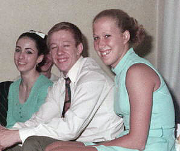

Nikolai Andrianov (USSR)
1976 Olympic AA Champion
1978 World AA
Champion

Joan Moore, Andrianov, and Kim
Chace (l-r) socialize
at a 1972 Chunichi Cup post-competition party.
Medal Total
Olympic Games: 7 Gold, 5
Silver, 3 Bronze
World Championships: 4
Gold, 9 Silver
World Cup: 7 Gold, 3
Silver
European Championships: 9
Gold, 6 Silver, 2 Bronze
"I never
perform an element in competition if I'm not sure I've completely mastered it."
Andrianov was born on October 14, 1952 in
Vladimir. An unruly child, he often skipped school. Nikolai's friend
Zhenya took gymnastics classes at the local sports school and talked Nikolai
into joining. After only a month, though, Andrianov was fed up. Luckily,
coach Nikolai Tolkachov persuaded Nikolai to come back to the gym.
Tolkachov also helped Andrianov to catch up with his school work. In 1969,
at age 17, he was named to the USSR youth team and the next year joined the USSR senior national team.
He was the USSR's reserve at the
1970 World Championships. The following year, Andrianov won 6 medals at
the 1971 European Championships. He married fellow gymnast Lyubov
Burda in 1973. They had 2 sons. Andrianov and his wife lived in
Japan for nearly a decade, where he coached 1999 World AA silver medalist Naoya Tsukahara. In 2002, they returned to Russia and Nikolai became the director of gymnastics at the gym in Vladimir where he used to train. Andrianov died on March 21, 2011 in Vladimir at the age of 58.
Competition Results
- 1969
- Jr. Friendship Tournament (Druzhba): 1st Team,
5th AA, 1st PH, 3rd R, 5th V, 5th PB
Jr. GDR-USSR: 1st Team, 1st AA
- USSR Schools Spartakiade: 1st AA
-
- 1970
- All-Union "Best Routine" Competition:
1st FX
Jr. Friendship Tournament (Druzhba): 1st Team, 1st
AA, 1st R, 1st PB, 1st HB, 2nd FX, 3rd PH, 4th V
-
- 1971
Chunichi Cup: 5th AA
- European Championships: 3rd AA, 1st PH, 1st V,
2nd RG, 2nd PB, 3rd FX
JPN-USSR Dual Meet: 3rd AA, 1st FX, 2nd PH, 2nd R, 3rd PB,
4th HB, 6th V
Riga International: 6th AA, 1st PH, 1st V
RSFSR Championships: 1st AA, 1st HB
- USSR Championships: 6th AA, 1st V, 6th
PB
USSR Spartakiadå: 6th AA, 1st V, 6th PB
-
- 1972
Chunichi Cup: 1st AA
- GDR-USSR Dual Meet: 1st Team, 1st AA, 1st RG
Olympic Games: 1st FX, 2nd Team, 3rd VT,
4th AA, 6th PB, 6th HB
Riga International: 1st AA, 1st FX, 1st PH, 1st V, 2nd PB, 3rd R, 3rd
HB
Tokyo Cup: 1st AA
- USSR Championships: 1st AA, 1st FX, 1st
HB, 2nd PH, 2nd R, 2nd V, 2nd PB
- USSR Cup: 1st AA, 1st FX, 1st HB, 2nd
PH, 2nd R, 2nd V, 2nd PB
USSR-HUN Dual Meet: 1st Team, 2nd AA
YUG-USSR Dual Meet: 1st Team, 1st AA
-
- 1973
- Chunichi Cup: 6th AA
- European Championships: 2nd AA, 1st FX, 1st V,
2nd RG, 2nd PB, 4th PH, 6th HB
Riga International: 1st AA, 1st PH, 2st PB, 2nd HB
- University Games: 1st Team, 1st AA, 1st FX, 1st PH, 1st VT, 4th
RG, 5th HB
USSR Championships: 1st Team, 1st AA
-
- 1974
- Chunichi Cup: 2nd AA
USSR Championships: 1st AA, 1st FX, 1st PH, 1st PB, 3rd V, 6th R
USSR Cup: 1st AA, 1st FX, 1st PH, 1st PB, 3rd V, 6th R
- World Championships (Varna): 2nd Team, 2nd AA,
1st RG, 2nd PH, 2nd VT, 2nd PB
-
- 1975
- European Championships: 1st AA, 1st FX, 1st V,
1st PB, 1st HB, 2nd PH, 5th RG
USSR Championships: 1st FX, 1st HB, 6th PH
USSR Spartakiad: 1st FX, 1st HB, 6th PH
- World Cup: 1st AA, 1st PB, 2nd FX, 2nd PH,
6th RG, 6th HB
-
- 1976
- Olympic Games: 1st AA, 1st FX, 1st RG, 1st VT,
2nd Team, 2nd PB, 3rd PH
- USSR Cup: 4th AA
USSR-TCH Dual Meet: 1st Team, 1st AA
-
- 1977
- World Cup: 1st AA, 1st FX, 1st RG, 1st PB, 2nd
V, 7th PH
-
- 1978
USSR Cup: 3rd AA
- World Championships (Strasbourg): 1st AA, 1st
RG, 2nd Team, 2nd V, 2nd PB, 4th FX
-
- 1979
-
USSR Championships: 4th AA, 3rd V, 4th PB
- USSR Spartakiade: 1st Team, 4th AA, 4th
V, 6th PB
- World Championships (Fort Worth): 1st Team,
2nd VT, 4th FX, 7th PH
-
- 1980
- Olympic Games: 1st Team, 1st V, 2nd AA, 2nd
FX, 3rd HB
- USSR Championships: 3rd AA
- This page was created on November 9, 1997 and was
last updated on March 25, 2026.
© Gymn Forum